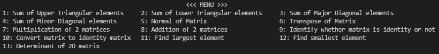

Q1.
WAP to accept and print the element of a 2D array.
Input: size(rows & columns), elements.
Output: array.
Q2.
WAP to find the sum of all elements of a 2D array.
Input: size, elements.
Output: sum.
Q3.
WAP to find trace (sum of elements) of major diagonal of matrix.
Input: size, elements.
Output: trace.
Q4.
WAP to find normal of a 2D matrix.
(Normal of a matrix is defined as square root of sum of squares of matrix elements)
Input: size, elements.
Output: Normal.
Q5.
WAP to convert the given 2D matrix to Unitary matrix.
Input: size, elements.
Output: given matrix, new matrix(unitary).
Q6.
WAP to find Transpose of a matrix.
Input: size, elements.
Output: given matrix, new matrix(transpose).
Q7.
WAP to find the multiplication of two matrices.
Input: 2 matrices.
Output: Multiplication matix.
Q8.
Write a menu driven program on array performing the operations given below.
